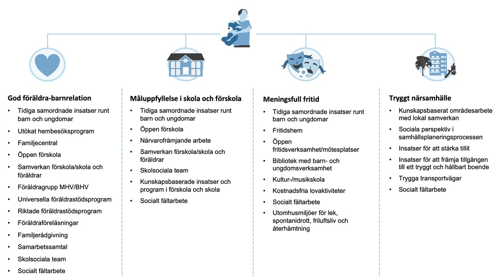
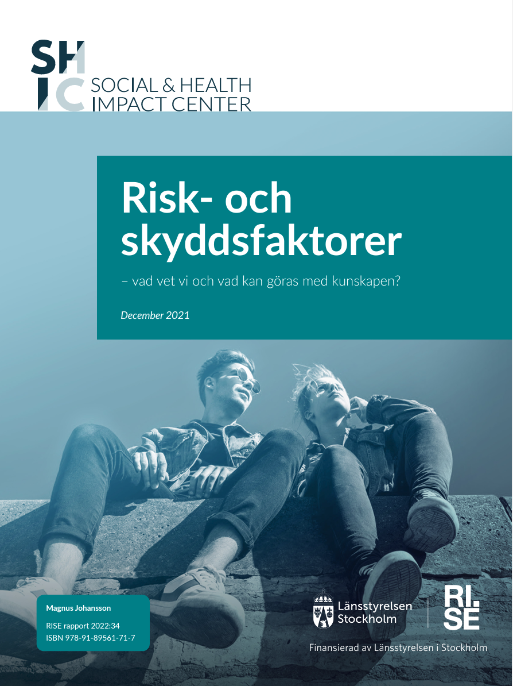

1 Introduktion
Länsstyrelserna har i samverkan och utifrån lokala behov bedrivit ett utvecklingsarbete för att underlätta tillgång till befintligt och aktuellt kunskapsunderlag gällande främjande och förebyggande verksamheter riktade till barn och unga. Urvalet har förankrats med myndigheter, forskare och kommuner men är inte fullständigt och kan komma att revideras över tid. Syftet är att genom kortare beskrivningar och hänvisningar till befintliga kunskapsunderlag öka användningen av dessa i praktiken samt underlätta lokal verksamhetskartläggning och verksamhetsutveckling.
Har du synpunkter på eller frågor om innehållet? Välkommen att kontakta Kajsa Lönn Rhodin, Länsstyrelsen i Stockholms län. Epost: kajsa.lonn.rhodin@lansstyrelsen.se
1.1 Det här är preventionspaletten
I preventionspaletten beskrivs verksamheter och insatser som kommuner enligt forskning, myndighetsrekommendationer eller lag bör erbjuda för att stärka fyra av de viktigaste skyddsfaktorerna för barn och unga, med potential att påverka flera olika problemutfall.
En god föräldrabarnrelation
Måluppfyllelse i förskola och skola
En meningsfull fritid
Ett tryggt närsamhälle
Genom att sortera verksamheterna under de fyra skyddsfaktorerna är förhoppningen att tydliggöra att fler verksamheter och förvaltningar har betydelse för att motverka olika problemutfall samt att samverkan är centralt för att nå målsättningarna i respektive förvaltning.

1.1.1 Så här gör du kartläggningen och analysen
Preventionspaletten är avsedd att göras i ett tvärsektoriellt sammanhang för att öka överblicken och kännedomen om vad kommunen erbjuder. Frågorna är av den karaktären att det krävs olika kompetenser och perspektiv för att besvara dem.
Preventionspaletten kan användas som stöd vid kartläggning och kvalitetssäkring av främjande och förebyggande verksamheter i kommunen. Med de kartläggande frågorna fångas inte enbart förekomst av en insats eller verksamhet utan även några grundläggande förutsättningar för ett kvalitativt arbete såsom finansiering, långsiktighet och uppföljning. De kartläggande frågorna syns under varje enskild verksamhet men kan även laddas ned i en Excelfil för att besvaras och sparas.
I de fördjupande frågorna kartläggs kvalitén i verksamheten eller insatsen på ett mer djupgående sätt. Frågorna kräver mer detaljerade svar och syftar till att identifiera eventuella utvecklings- och förbättringsområden såsom tillgänglighet, målgruppsanpassning, kompetensutveckling samt tillvägagångssätt för uppföljning. Dessa frågor kan också laddas ned i eget formulär för att besvaras och sparas.
Under rubriken Indikatorer finns länkar till indikatorer med bäring på verksamheten/insatsen och under rubriken Läs mer länkas till de studier eller myndighetsrapporter som ligger till grund för att verksamheten/insatsen inkluderats. Om det finns specifik lagtext med koppling till verksamheten/insatsen så redovisas det under rubriken Lagstiftning.
1.2 Risk och skyddsfaktorer – vad vet vi och vad kan göras med kunskapen?
Preventionspaletten bygger på forskning och utgår från fyra skyddsfaktorer som visat sig ha stor betydelse för barn och ungas välmående och utveckling. Att få tillgång till tidiga insatser kan på individnivå förebygga framtida utanförskap, olika former av fysisk och psykisk ohälsa, arbetslöshet, missbruk och kriminalitet. Här finns också stora vinster på samhällsnivå att hämta, det vi investerar i barn och unga i ett tidigt skede har vi igen mångfalt senare.
I praktiken handlar det ofta om samverkan kring insatser riktade till föräldrar, förskola och skola, fritids- och föreningsverksamhet, eller insatser för att förändra miljöer som barn och unga rör sig i.
För att motivera till samverkan mellan olika sektorer och sakfrågor har Länsstyrelsen i Stockholm och RISE gjort en kunskapssammanställning över forskning på gemensamma risk- och skyddsfaktorer för olika problemutfall. Sammanställningen har omfattat 86 forskningsöversikter och studier som sammantaget tydligt visar att forskningsbaserade satsningar på att minska riskfaktorer och stärka skyddsfaktorer på olika nivåer kan minska risken för flera olika problemutfall, exempelvis kriminalitet, beroendeproblematik och psykisk ohälsa.

Här finns rapporten: Risk- och skyddsfaktorer – vad vet vi och vad kan göras med kunskapen?
1.3 Framgångsfaktorer för ett effektivt främjande och förebyggande arbete
Åren 2017-2023 drev Socialstyrelsen och Skolverket en nationell satsning för att barn och unga ska erbjudas tidiga och samordnade insatser från skolan, hälso- och sjukvården och socialtjänsten. Cirka 90 kommuner och 16 regioner ingick i arbetet.
Några av framgångsfaktorerna som identifierats i arbetet är:
• Uppfinn inte hjulet på nytt!
• Kartlägg och enas om hur problembilden ser ut lokalt eller regionalt
• Förankra arbetet politiskt
• Förstå varandras uppdrag och bygg tillit
• Samordna strukturen i det förebyggande respektive brottsförebyggande arbetet
• Inrätta tvärprofessionella team
• Involvera barn, unga och vårdnadshavare
• Gå stegvis fram och följ upp, innan arbetet skalas upp
• Efterfråga uppföljning av resultat för barn och unga
Läs mer i TSI-boken
1.4 Barns delaktighet
Barnkonventionen är sedan den 1 januari 2020 svensk lag. Varje beslut, administrativ eller lagstiftande åtgärd måste därmed ske i enlighet med barnkonventionen. Enligt artikel 12 i barnkonventionen har alla barn, oavsett ålder, rätt att delta i frågor och beslut som berör dem.
Detta innebär att barn har rätt till:
• Information som de förstår om det som rör dem.
• Att komma till tals och bli lyssnade på.
• Rätt till inflytande i proportion till ålder och mognad.
• Återkoppling om hur deras åsikter har påverkat beslut.
Källa: Barnombudsmannen: Barns delaktighet
Detta bör genomsyra all verksamhet och tillvägagångssätt eller forum för att inkludera barn och unga är med fördel en gemensam angelägenhet för kommunen då barn och ungas tid och engagemang även bör efterfrågas med systematik och respekt. Detta innebär även att barns åsikter ska ges verklig betydelse för de beslut som fattas.
Läs mer här: